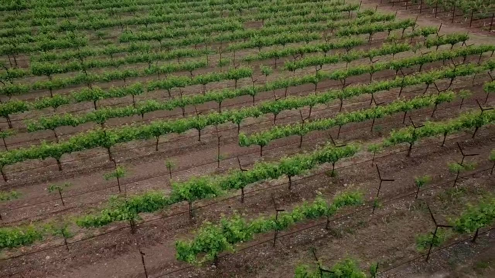

Projet de Master · ISVV / IAE Bordeaux · novembre 2026
À portée de vin.
Comment un casier click and collect peut-il ramener les moins de 35 ans vers le vin ? Quatre casiers, quatre réponses : le marché, la loi, le concept et les chiffres.
Elliot, Martin, Romain, Andréa

Sources consultées
OIVFranceAgriMerAssemblée nationaleLégifranceCour de cassationCour administrative d'appel de ParisBODACCVille d'Aix-en-ProvenceDREETS Nouvelle-AquitaineWine Paris & Vinexpo ParisIfop pour Vin & SociétéChambre d'agriculture des LandesService-public.frArcep / CrédocInter-RhôneBOFiP-ImpôtsCCI Paris Île-de-FranceVille de MontpellierOIVFranceAgriMerAssemblée nationaleLégifranceCour de cassationCour administrative d'appel de ParisBODACCVille d'Aix-en-ProvenceDREETS Nouvelle-AquitaineWine Paris & Vinexpo ParisIfop pour Vin & SociétéChambre d'agriculture des LandesService-public.frArcep / CrédocInter-RhôneBOFiP-ImpôtsCCI Paris Île-de-FranceVille de Montpellier
La cave
Quatre caves, une par chapitre. Ouvrez une porte.
Survolez une cave pour entrouvrir sa porte, cliquez pour entrer. Les caves et les bouteilles sont des rendus 3D, les étiquettes sont fictives.

Une étude, pas une publicité
Un projet de Master, sans aucune vente réelle
Ce site présente un concept étudié pour un cours de marketing du vin à Bordeaux. Il ne vend rien, et respecte les règles de communication de la loi Évin.
Voir les 55 sources